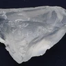
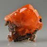
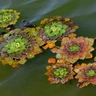
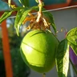

Correspondence Grimoire
Spirits

PetalitePhenacite
Wulfenite
Ling Nut
Passion FlowerProtect Against Spirits
- Goddesses: Bastet, Hekate, Kupala
Nature Spirits
- Element: Earth
- Color: Green
- Trees: Fir, Oak, Pine, Spruce
- Bird: Oriole (tree spirits)
Holy Spirits
- Herb/Garden: Angelica, Columbine
- Birds: Dove, Condor, Kite
- Animal: Polar Bear (communicate with)
Contacting Spirits
- Colors: Indigo, Purple, Yellow
- Herb/Garden: Lilac, Yarrow
- Misc. Plants: Lotus, Wormwood
- Gemstones/Minerals: Amethyst, Emerald, Labradorite, Moonstone, Sugilite
- Goddess: Arianrhode
- Gods: Arawn, Ogma
- Animal: Polar Bear (communicate with)
- Birds: Condor, Kite
Plants are to call onto spirits.
Realms Beyond the Physical
Many practitioners acknowledge the existence of dimensions or planes beyond ordinary perception. These realms may be inhabited by various nonphysical beings. Some witches develop relationships with deities, while others work with angels, fae, or elemental spirits. An animist perspective holds that all things, from animals to stones, carry their own spark of divine presence.
Belief in these beings is not required for magical practice. Witchcraft functions as a skill set that operates independently of any particular cosmology or theology.
Spirit: The Fifth Element
Spirit (also known as ether) links the four quarters of creation and serves as the source of magick. It resides within and without, around, above, and below all things. While earth, air, fire, and water can be experienced directly with physical senses, spirit is elusive-you can only engage it with your spiritual senses.
In spells and rituals, spirit usually comes into play when calling upon a divine figure to bless and energize your magick, or when inviting devic entities (nature spirits) to work in harmony with you.
Nature Spirits
Sometimes called devas, elementals, or fairies, nature spirits can be valuable partners in magical practice. These spirits represent the intelligence or awareness attached to a particular place, plant, tree, natural object, or specific type of weather. They are not deities.
You may visualize these spirits as tiny people or orbs of light, or you may not see them at all but experience emotions or sensations near the place or phenomenon they inhabit. What matters is honoring them as allies and working together to heal and harmonize the earth.
The Findhorn Garden
In the early 1960s, the Findhorn spiritual community in northern Scotland became famous for growing forty-pound cabbages and tropical flowers in sandy, inhospitable soil. According to founder Dorothy Maclean, the elementals who govern plant growth-described as "living forces of creative intelligence that work behind the scene"-guided the community in maintaining these incredible gardens.
Petitioning for Divine Help
Once familiar with various deities and spirits, practitioners may choose to petition one or more for assistance with specific challenges. Someone facing a significant obstacle might call on Ganesh, known for removing barriers. A practitioner seeking to cultivate compassion might align with Kwan Yin, the goddess of mercy. Many witches hold that gods and goddesses willingly assist those who ask respectfully.
Beyond deities, practitioners share this universe with many types of nonphysical beings who guide, protect, and aid in daily life. Some envision these helpers as angels, others as sages, guardians, or aspects of higher consciousness. Indigenous traditions often look to revered ancestors and spirit animals for guidance. Fairies, nature spirits, and elementals can become tremendous assets in magical work and may prove essential to a spell's success.